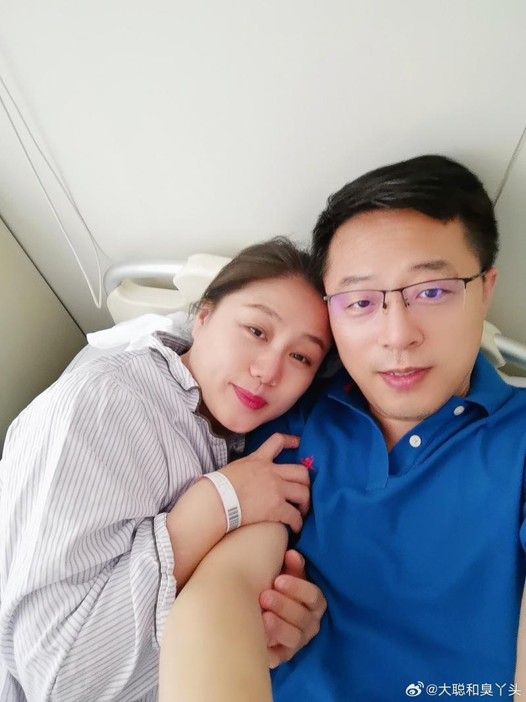

中国外交部前发言人赵立坚的妻子汤天如日前在微博分享她的抗癌经历，表示自己去年6月确诊乳腺癌第五期，已动过两次手术，因为不想再折腾，决定放弃西医治疗。不过近日，配有赵立坚夫妇合照和原博极为相似的图片在网上流传，图中配文「癌症特护和治疗费近370万，个人支付不到300元」，赵立坚立刻出面僻谣：「直接举报，屏蔽拉黑」。
潇湘晨报报导，汤天如在微博发文称，她去年6月确诊乳腺癌第五期，立即住院并进行两次手术。而医师告诉她，如果不化疗和放射性治疗，生命期只有六个月，如果配合治疗有50%的机会可以活6至24个月。「我的情绪一下崩溃了，老公以后怎么办？孩子怎么办？」。
汤天如表示，半小时后，她决定不接受西医治疗，「我不想天天让他（赵立坚）陪着我去医院，也不想看到自己只能虚弱的坐在轮椅上，既然时间那么短就不要再折腾自己，让自己最后的时间舒服些选择中医调理」。
汤天如也发布多张身穿病服躺在病床依偎着赵立坚的照片，表示「生命只有一次，死里逃生。爱是时刻的陪伴，疼爱和呵护，感恩生命中有你。你是最好的丈夫，也是最优秀的党员」，再度引发外界关注与议论。
此外，一张图近日在网络上流传，显示帐号名为「大聪和臭丫头」的微博内容，声称癌症特护和治疗费用近 370 万元人民币，但个人支付了不到300元，感谢政府和国家。当晚，赵立坚立刻出面澄清，证实这张为造假图片。